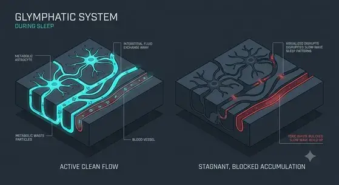
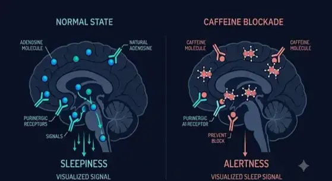

Why Is Your Brain Waking You Up at 3 AM? (And How to Stop It).
Constantly waking up wired and unable to drift back to sleep? It is not your fault. This is a reversible biological pattern. Let’s isolate your exact neurochemical trigger in less than 60 seconds—without the medical jargon.
Pinpoint Your Subcortical Sleep Blocker
This algorithm is calibrated against peer-reviewed sleep science parameters to pinpoint whether your midnight waking is driven by cortisol surges, fluid stagnation, or adenosine backlog clearance.
✅ Trusted by 100+ early readers who mapped their trigger
⚡ 45s Evaluation • Immediate Breakdown • No Email Required
Loading question...
Frequently Asked Questions
Why do I wake up wide awake at 3 AM?
That 3 AM wide-awake feeling often happens when your body's natural wake system fires slightly ahead of schedule.
Instead of holding you in a deep, restful state, a premature shift in your early morning internal hormones opens the sleep gate too early—leaving you feeling wired but exhausted.
Can a blocked glymphatic system cause middle-of-the-night awakenings?

When early-night deep rest cycles get shortened, your system misses out on its natural nightly cellular clearing phase.
This buildup of daily metabolic byproducts acts as a subtle internal physical irritant inside the tissues, prompting the brain to launch micro-awakenings that break your sleep continuity.
How does caffeine consumption impact late-night sleep stability?

Caffeine operates by actively binding to your brain's natural calming receptors, temporarily masking your true internal sleep debt.
Later in the night, as this chemical block wears off unevenly, it triggers a sudden rebound activation in the biological sleep switch, tricking your mind into snapping wide awake.